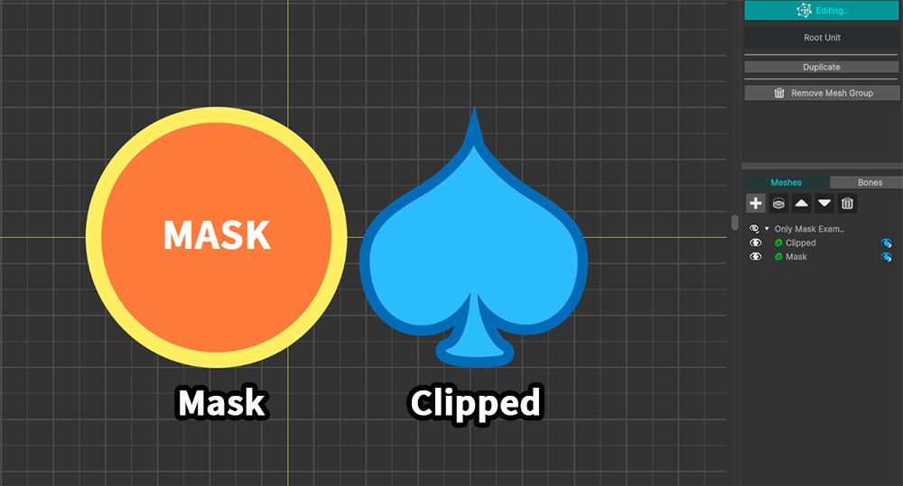
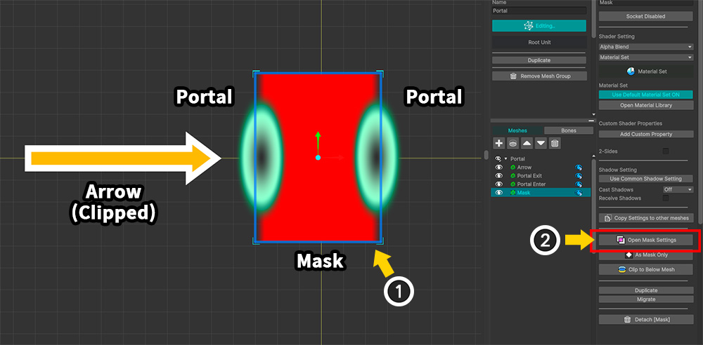

AnyPortrait > 메뉴얼 > 마스크 전용 메시
마스크 전용 메시
1.6.0
메시를 렌더링하지 않고 마스크로만 사용하면 재미있는 효과들을 만들 수 있습니다.
이 페이지에서는 마스크로만 동작하는 마스크 전용 메시를 설정하는 방법과 이것을 활용한 재미있는 예제를 소개합니다.
마스크 전용 메시를 설정하기

마스크로 사용될 메시("Mask")와 클리핑되는 메시("Clipped")가 있는 간단한 예제입니다.

(1) "Clipped" 메시를 선택합니다.
(2) 클리핑 마스크 버튼을 눌러서 "Mask"로부터 클리핑되도록 설정합니다.

(1) "Mask" 메시를 선택합니다.
(2) 오른쪽 UI의 "As Mask Only" 버튼을 누릅니다.

"Mask" 메시가 녹색으로 렌더링되는 것을 볼 수 있습니다.
이 상태는 "Mask" 메시가 실제로는 렌더링되지 않고, 오직 "Clipped" 메시로 마스크를 제공하는 역할만 수행하고 있음을 의미합니다.
원래는 렌더링이 되지 않아야 하지만, 에디터에서는 위와 같이 녹색으로 보여지고 있는 것입니다.

마스크 전용 메시가 에디터에서 보여지지 않도록 만들어봅시다.
(1) 보기 메뉴에서 "Show Meshes Without Mask" (단축키 : M )을 누릅니다.

(1) "Mask" 메시가 편집기에서 렌더링되지 않고, 오직 클리핑 렌더링만 동작하는 것을 볼 수 있습니다.
(2) 현재 마스크 전용 메시들이 렌더링되는지 여부를 아이콘을 통해서 확인할 수 있습니다.
참고
M 키를 누르면 작업 공간에서의 상태가 "모든 메시들이 보여짐", "마스크 전용 메시를 제외하고 모든 메시들이 보여짐", "메시들이 보여지지 않음"으로 순서대로 전환됩니다.

유니티 씬에서 확인해보면, 위와 같이 클리핑되는 메시만 렌더링이 되는 것을 볼 수 있습니다.
포탈 효과 만들기

마스크 전용 메시를 이용하여 재미있는 포탈 효과를 만들어봅시다.
(1) 두개의 포탈("Portal")을 화살표 메시("Arrow")가 관통하는 효과를 만들기 위해서 마스크 메시 ("Mask")를 위와 같이 배치했습니다.
(2) "Mask" 메시를 선택하고 Open Mask Settings 버튼을 누릅니다.

(1) "Mask" 메시에 대한 마스크 데이터를 생성합니다.
(2) "Arrow" 메시를 대상 메시로서 등록합니다.
(3) "Alpha Mask Preset" 타입의 프로퍼티를 추가합니다.
(4) Mask Operation의 값을 "Inverse And"로 변경합니다. 이렇게 하면 마스크 영역이 반전되어 클리핑이 될 것입니다.

(1) 마스크 설정 다이얼로그를 닫고 "Arrow" 메시를 움직여보면, 마치 포탈의 사이에서 사라지는 것처럼 보입니다.
(2) "Mask" 메시를 선택합니다.
(3) As Mask Only 버튼을 누릅니다.

"Mask" 메시가 마스크 전용 메시가 되면서 위와 같이 "화살표 메시가 포탈을 관통하는 것 같은 효과"가 완성됩니다.